릴스 · 작업 영상
▶ 릴스
타이어게러지모터스는 2011년부터 15년간 튜닝과 정비 한 길만 걸어온 남양주 진접의 튜닝·정비 전문업체입니다. 온로드와 오프로드를 가리지 않고 수많은 차량을 직접 세팅해 온 경험으로, 차량 용도와 주행 스타일에 맞는 타이어와 하체 세팅을 제안해 드립니다. 국내외 주요 브랜드 타이어 재고를 넉넉히 보유해 대부분 당일 장착이 가능합니다.
2011년부터 온로드·오프로드 차량을 직접 세팅해 온 튜닝·정비 전문업체. 용도와 주행 스타일에 맞춰 제안합니다.
수입차·국산차·SUV 타이어 교체. 런플랫, 대구경 휠도 전용 장비로 안전하게 작업합니다.
타이어 교체와 함께 하면 편마모를 막고 승차감이 좋아집니다.
엔진오일, 브레이크, 하체 점검 등 차량 정비를 한 번에.
지프 랭글러·글래디에이터, 무쏘, 렉스턴 스포츠, 타스만, PV5 리프트업·빅풋스프링·오버휀다·구조변경.
AT·MT 타이어 교체와 사이즈업, 휠·타이어 세트 상담.
주요 브랜드 재고 보유. 전화로 재고와 시간 먼저 확인해 주세요.
네, 꼭 해야 해요. 리프트업을 하거나 타이어가 커지면 바퀴 각도(토·캠버)가 같이 틀어져요. 그대로 타면 핸들이 한쪽으로 쏠리거나 타이어가 한쪽만 닳아요. 타이…
짐을 얼마나 싣는지에 따라 달라요. 짐을 많이 싣는 카고는 뒤쪽을 더 올리고(예: 전륜 1인치·후륜 1.5인치, 또는 1.5인치·2인치), 짐이 적으면 앞뒤 높이…
짐을 싣지 않아도 뒤가 내려앉았다면 후륜 스프링이 약해진 경우가 많아요. 빅풋 강성 스프링으로 바꾸면 처진 차고를 되찾고 짐을 실어도 덜 내려앉아요. 리프트업까지…
바퀴가 휀다 밖으로 튀어나오면 단속 대상이에요. 오버휀다로 돌출을 덮고, 차 폭이 늘어난 만큼 구조변경(승인 → 작업 → 검사)을 받으면 합법적으로 탈 수 있어요…
출퇴근이 대부분이고 가끔 비포장·캠핑을 간다면 AT(올터레인)가 맞아요. 소음이 적고 승차감이 편해요. 진흙·험로를 자주 달리거나 블록 무늬의 강한 오프로드 자세…
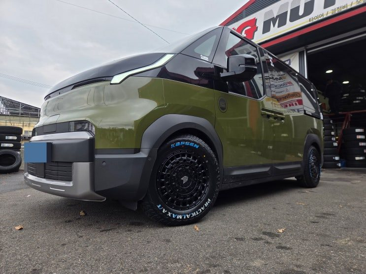
기아 PV5 카고 휠타이어 교체! FOX 16인치 휠 + 캡센 AT 215 70 16 장착 후기 (남양주 타이어게러지모터스)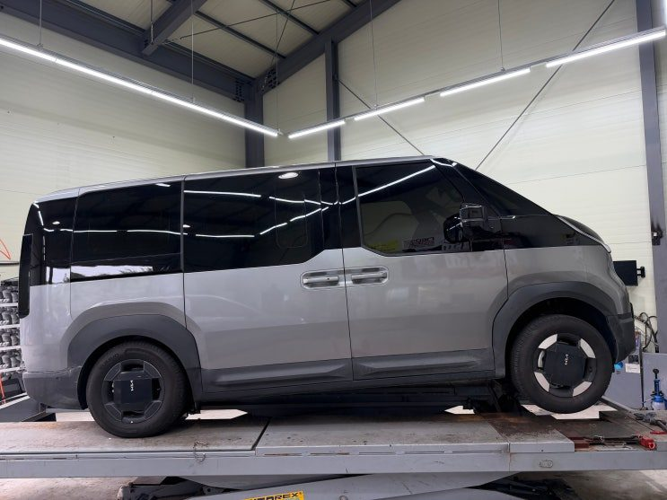
기아 PV5 빅풋스프링 전륜 리프트업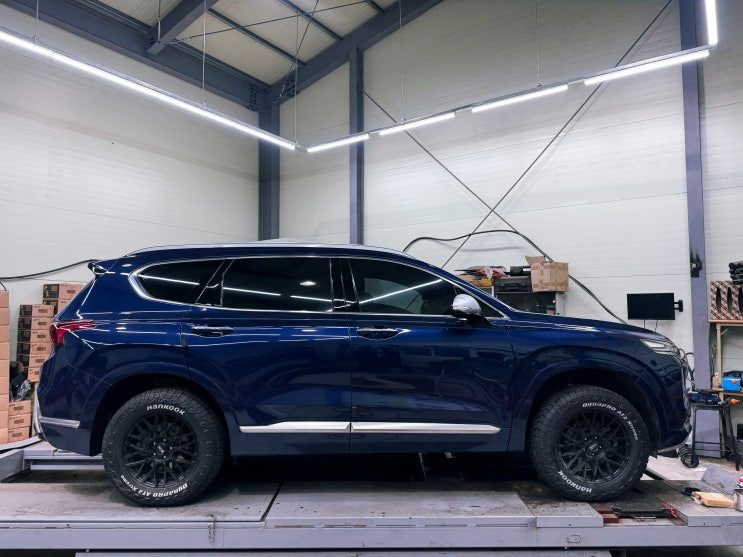
산타페 tm 오프로드 셋팅 빅풋 ㅡ타이어게러지모터스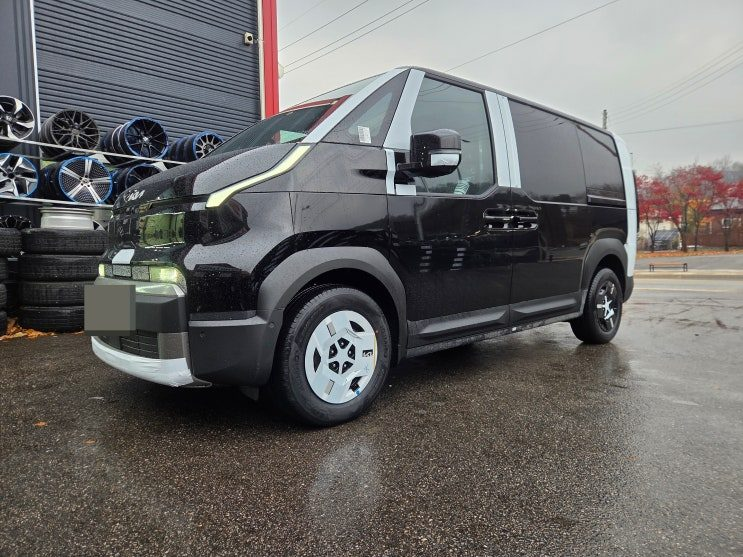
기아 PV5 카고 빅풋스프링 장착! 상시적재 차량 보강 작업｜남양주 타이어게러지모터스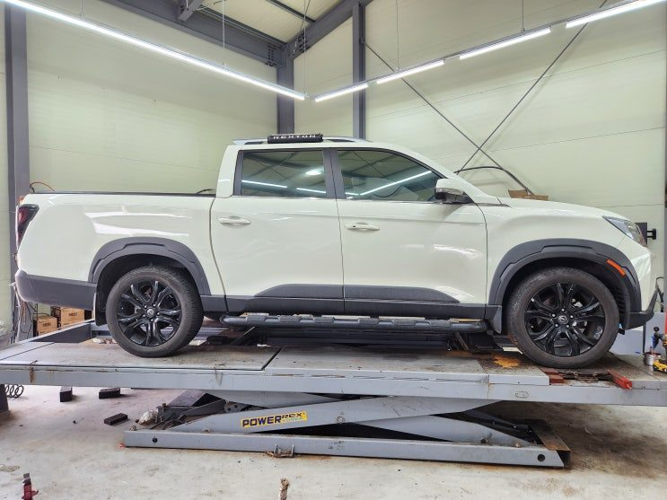
KGM 렉스턴 스포츠 하체 풀세팅 작업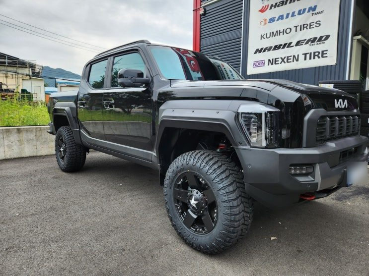
타스만 슈퍼비 오버휀다 튜닝 ㅡ타이어게러지모터스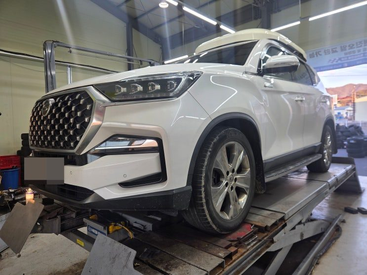
남양주 G4렉스턴 후륜 처짐 해결! 빅풋 강성스프링 보강 장착 후기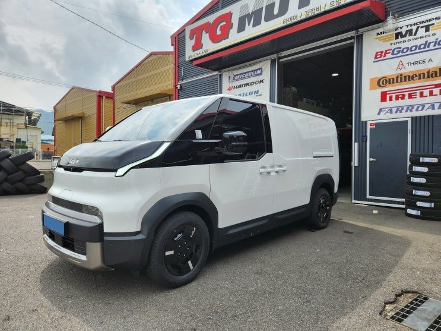
기아 PV5 빅풋스프링 리프트업 작업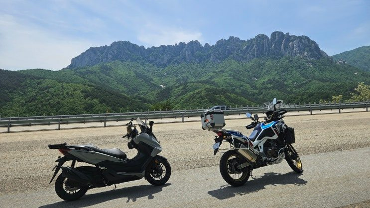
혼다 아프리카 트윈 안개등 구조변경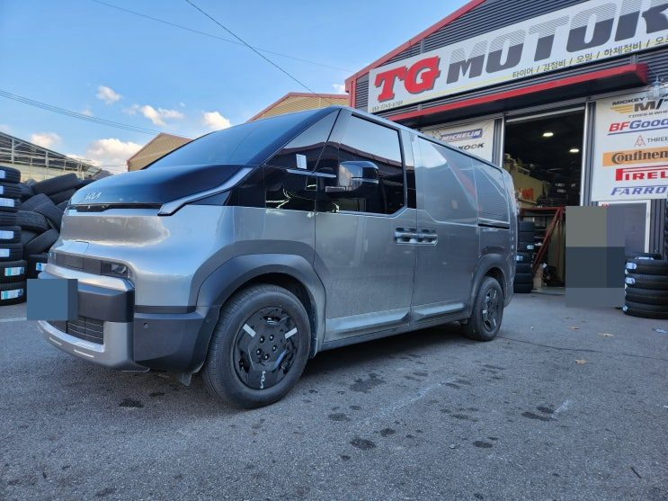
잠실 PV5 카고 빅풋스프링 장착! 적재량에 맞춘 최적의 차고 세팅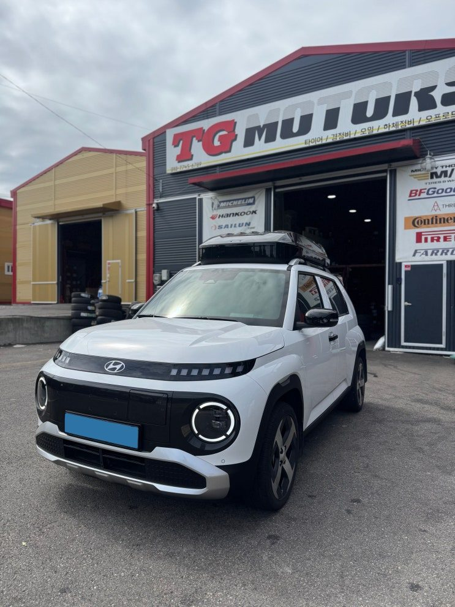
현대 캐스퍼EV 빅풋스프링 리프트업 작업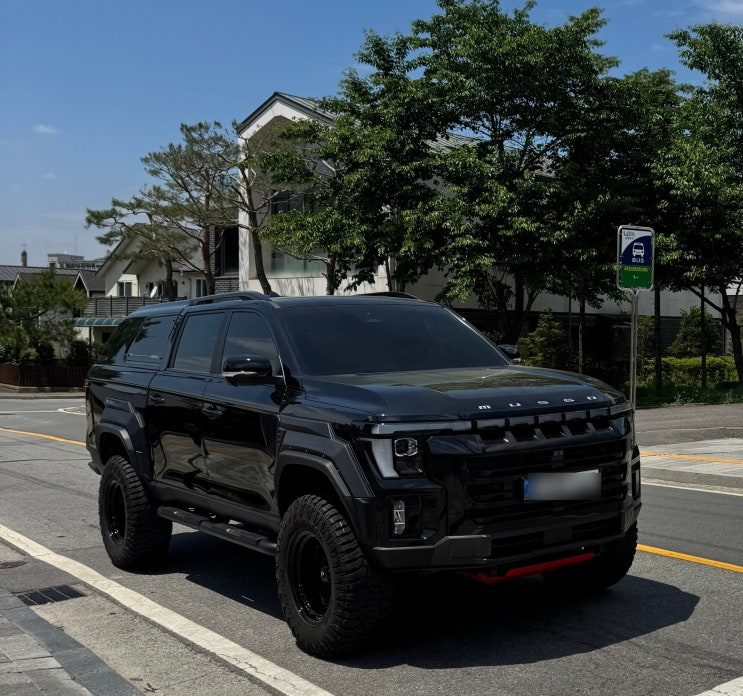
무쏘 오프로드 풀튜닝 ㅡ남양주타이어게러지모터스방문 고객 리뷰는 네이버에서 확인하세요. 구글 리뷰도 한 줄 남겨주시면 큰 힘이 됩니다. 블로그에 새 작업 후기를 쓰면 위 작업사례에도 자동으로 올라옵니다.